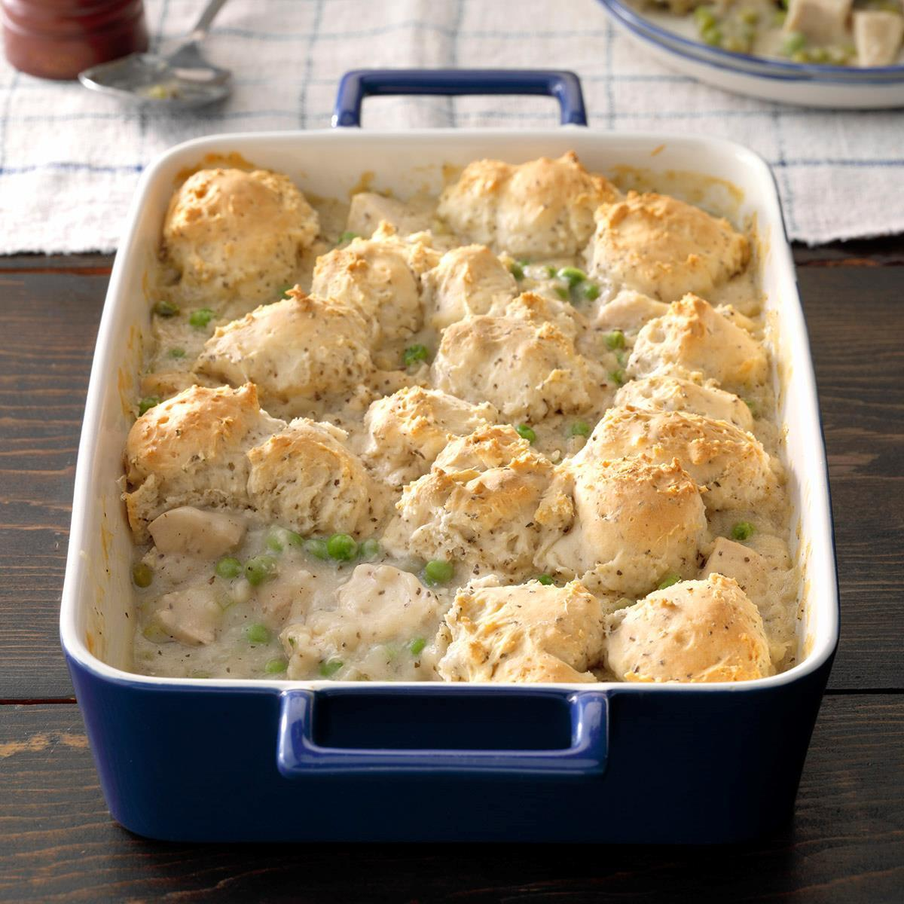

Chicken and Dumplings Casserole

Description
This chicken and dumplings casserole is comfort food at its best.
503 Calories, 23g Fat, 48g Carbs, 25g Protein.
Takes roughly 20 minutes to prep, 80 minutes to cook, and yields 6 servings.
Ingredients
- 1 pound skinless, booleness chicken breasts, cut into small pieces
- 1 cup slided carrot
- 1/2 cup sliced celery
- 1 cube chicken bouillon, or more to taste
- 1/3 cup butter
- 1/2 cup chopped onion
- 2 teaspoons minced garlic
- 1/3 cup all-purpose flour
- 1/2 teaspoon poultry seasoning
- 1/2 teaspoon dried basil
- 1/2 teaspoon dried thyme
- 1/4 teaspoon ground black pepper
- 1.75 cups chicken broth
- 2/3 cup milk
- 1 cup frozen peas
- 16.3 ounce package regrigerated biscuit dought, separated
Steps
-
Preheat the oven to 350 degrees F (175 degrees C).
Grease a large baking dish.
-
Combine chicken, carrot, celery, and bouillon in a large pot and add enough water to cover.
Bring to a boil, cover, and cook until chicken is no longer pink in the centers, 10 to 15 minutes.
Drain, reserving chicken and broth in another pot or bowl.
-
Melt butter in the same pot over medium heat.
Cook onion and garlic in the hot butter for 5 minutes.
Stir in flour, poultry seasoning, basil, thyme, and pepper.
Stir in chicken broth and milk slowly. Add chicken mixture and peas.
Simmer over medium-low heat until thick, 10 to 15 minutes.
Pour mixture into the prepared baking dish.
-
Bake in the preheated oven until mixture is bubbling, 20 to 25 minutes.
Remove from the oven and place biscuits on top. Cover and bake for 15 minutes.
Uncover and continue baking until biscuits are golden brown, 15 to 20 minutes more.